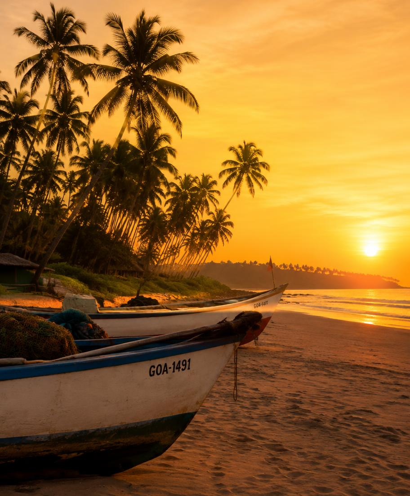
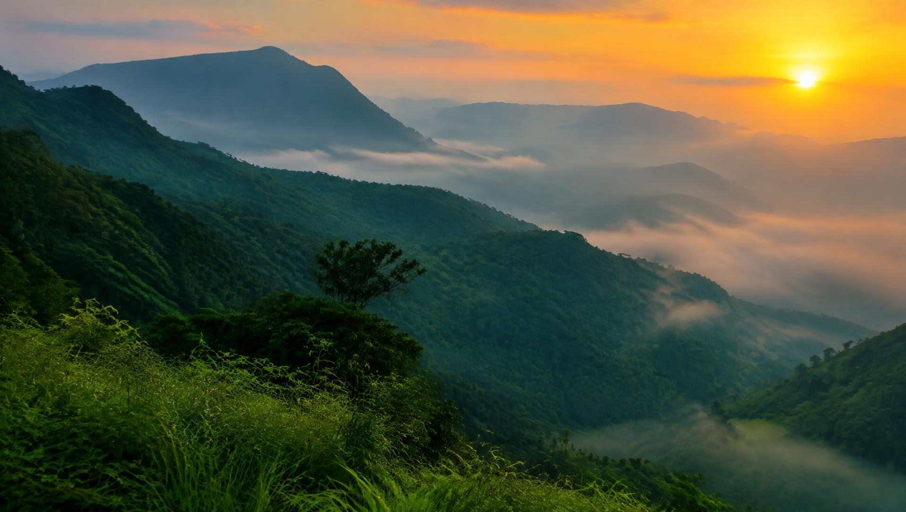
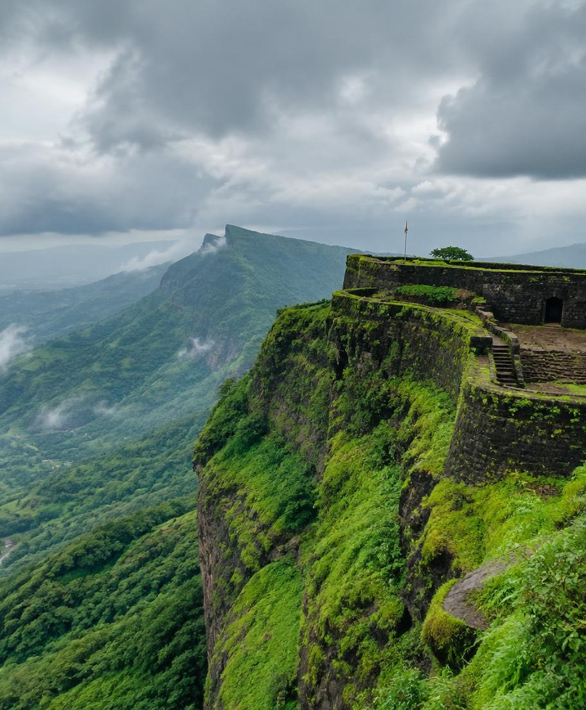
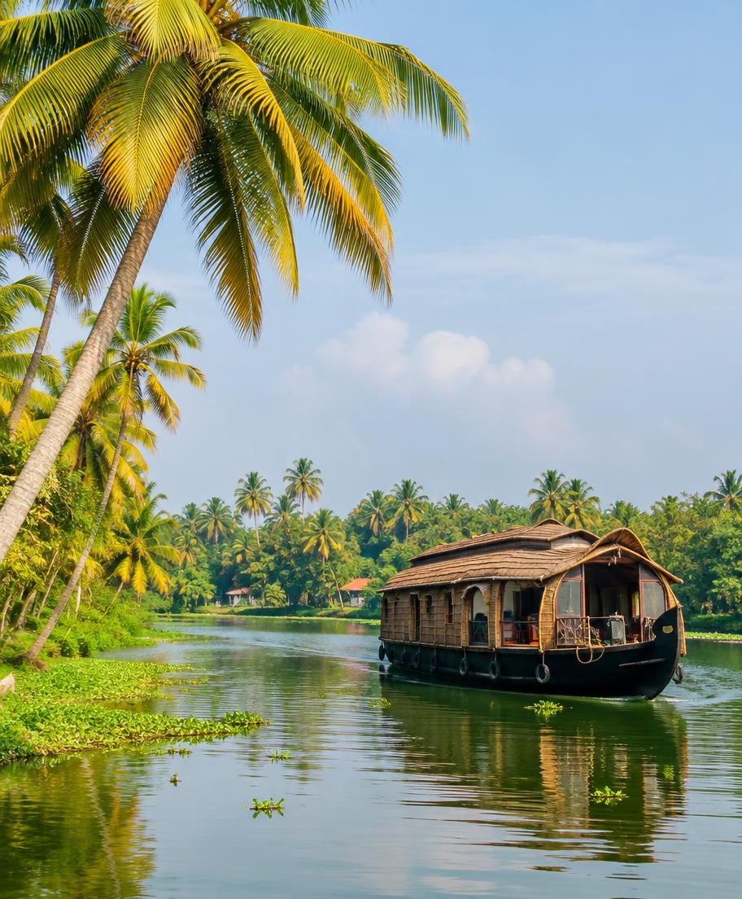
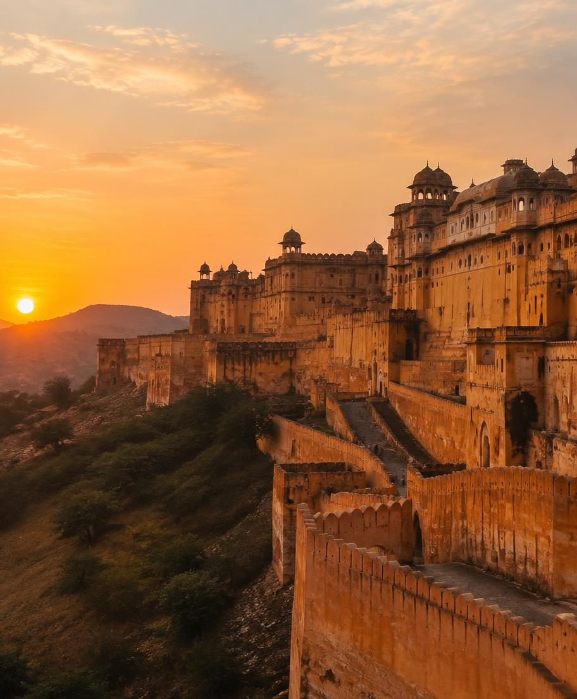
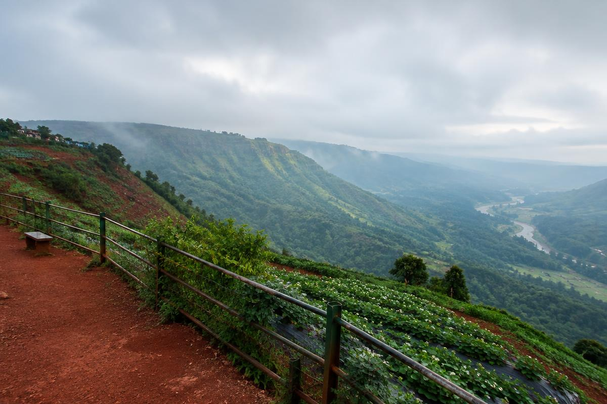
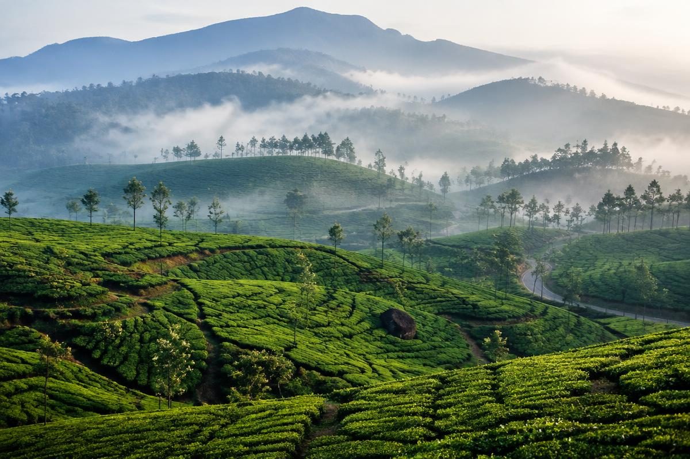
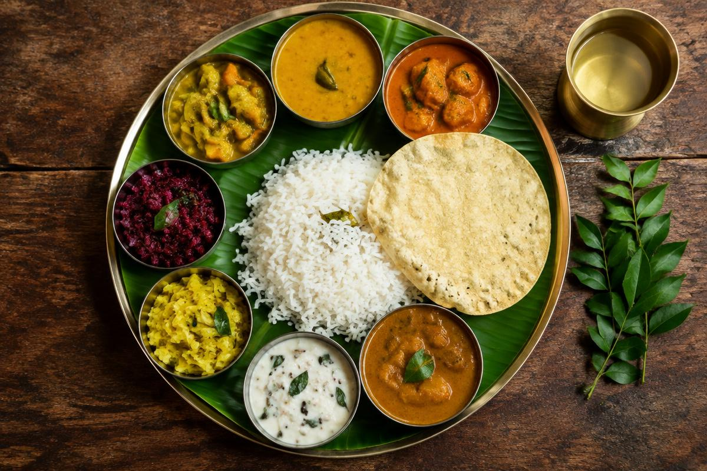

West Coast
Goa
Golden beaches, Portuguese-era churches and slow sunsets with the sound of the Arabian Sea.
Beach experiences
A journey through the subcontinent
From sun-warmed beaches and monsoon-washed forts to desert palaces and tea-covered hills — discover a country of endless stories.
Explore DestinationsPopular Destinations
Each region of India feels like a different country. Begin with these traveller favourites.

Golden beaches, Portuguese-era churches and slow sunsets with the sound of the Arabian Sea.
Beach experiences
Clifftop forts of Shivaji Maharaj, monsoon waterfalls and cool hill retreats near Pune and Mumbai.
See the forts
Drift through backwaters on a houseboat, then climb into the tea gardens of the Western Ghats.
Hills & nature
Sandstone fortresses, painted havelis and desert evenings filled with folk music.
Royal heritageHeritage & Forts
India's forts tell the story of kingdoms, sieges and craftsmanship spanning a thousand years.
Tip: visit forts early morning for cooler weather and softer light.
Hill Stations & Nature

Sweeping valley viewpoints, red-earth trails and fresh strawberries straight from the farm. Boat on Venna Lake and watch sunset at Arthur's Seat.
Just two hours from Mumbai, Lonavala comes alive in the monsoon with waterfalls, cave temples at Karla and Bhaja, and its famous chikki.

Endless emerald tea estates, the Nilgiri tahr of Eravikulam National Park and quiet mornings wrapped in mist.
Experiences
Goa, Gokarna, Varkala
Sahyadris & Himalayas
Festivals, dance & crafts
Forts, temples & palaces
Forests, lakes & wildlife

Thalis, street food & spice
Travel Guide
Learning a few words — namaste, dhanyavaad — opens hearts everywhere you go.
About
Discover India is a student travel project celebrating the landscapes, heritage and people of India. It is built with HTML5, CSS3 and JavaScript to inspire your next journey.